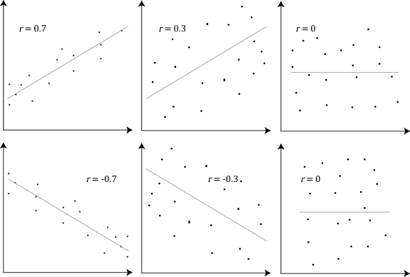

The Big Picture: Tracking Variables and Finding Causes
In psychology, a Variable is anything that can vary and is feasible and ethical to measure (like hours of sleep, levels of stress, or test scores). Once researchers decide what variables they want to study, they must choose a research method. Broadly, these fall into two categories: Non-Experimental Methodology (where we simply observe variables to see if they are related) and experiments (where we actively manipulate variables to prove cause and effect). Let's look at the strengths and weaknesses of both.
1.Predicting Behavior: Correlation
When naturalistic observations and surveys reveal that one trait or behavior accompanies another, we say the two correlate. A Correlation is a measure of the extent to which two variables change together, and thus of how well either variable predicts the other. To visualize this, researchers plot the data on a Scatterplot, a graphed cluster of dots where the slope suggests the direction of the relationship.
Correlations come in two forms:
- Positive Correlation
- Two variables move in the same direction. Example: As the number of hours spent studying increases, GPA also increases.
- Negative Correlation
- Two variables move in opposite directions. Example: As the number of school absences increases, a student's GPA decreases.
Researchers measure the strength of this relationship using a Correlation Coefficient (represented as an r value), a statistical number ranging from -1.0 to +1.0. The closer the r-value is to 1.0 (positive or negative), the stronger the relationship. You do not need to know how to calculate r-value but being able to quickly interpret correlations is a key skill in AP Psychology!

The Two Traps of Correlation
While correlations are great for making predictions, they are plagued by two logical traps that prevent us from claiming causation:
- The Directionality Problem
- Even if A and B are correlated, we don't know if A causes B, or if B causes A. (Does playing violent video games cause aggression, or do aggressive kids naturally prefer violent video games?)
- The Third Variable Problem
- An unmeasured, outside variable might be responsible for the observed relationship between two other variables. For example, ice cream sales and sunburns have a strong positive correlation. Does eating ice cream cause sunburns? No. The hidden third variable, the hot summer sun, is causing both!
2.Illusions and Regressions
Sometimes, we perceive correlations that don't exist at all. An Illusory Correlation occurs when we believe a relationship exists between two things, but in reality, there is none (like believing that people act crazy during a full moon). We remember the times the crazy behavior happened during a full moon because it confirms our bias, but we forget all the times it didn't.
We are also easily fooled by a statistical phenomenon called Regression Toward the Mean. This is the tendency for extreme or unusual scores to naturally fall back (regress) toward their average over time. For example, if a student guesses blindly on a test and gets an incredibly lucky 100%, their score on the next test will likely regress back down toward their normal average of an 80%. If they wore "lucky socks" during the first test and didn't during the second, they might form an illusory correlation, failing to realize the drop was just a mathematical regression to the mean.
3.Isolating Cause and Effect: The Experiment
To definitively prove that one variable causes a change in another, researchers must move beyond observation and conduct an Experiment. This is a research method in which an investigator actively manipulates one or more factors to observe the effect on some behavior or mental process.
The Anatomy of an Experiment
A true experiment requires several specific structural components:
- Independent Variable (IV)
- The factor that the experimenter manipulates or changes. This is the presumed "cause."
- Dependent Variable (DV)
- The outcome factor; the variable that is measured to see if it changed in response to the IV. This is the presumed "effect."
- Experimental Group
- The group of participants exposed to the treatment (the actual independent variable).
- Control Group
- The group that is NOT exposed to the treatment. They serve as a baseline for comparison.
Anatomy in Action: The Energy Drink Study
To see how these pieces fit together, imagine a psychologist wants to test if drinking an energy drink before a big exam actually improves test scores. They gather a sample of 100 students and set up the following experiment:
- Independent Variable (IV)
- The energy drink. This is what the researcher is actively manipulating and handing out to see if it causes a change.
- Dependent Variable (DV)
- The exam score (0–100%). This is the data being measured at the end of the study; it depends entirely on whether or not they got the caffeine.
- Experimental Group
- The 50 students who are handed a 16 oz can of a high-caffeine energy drink 30 minutes before the test starts. They are receiving the actual treatment.
- Control Group
- The 50 students who are handed 16 oz of plain tap water 30 minutes before the test starts. They don't get the caffeine, providing a baseline so the researcher can see if the energy drink actually did anything better than plain old hydration.
💡 Pro-Tip for the Exam: If you ever get confused trying to tell the IV and DV apart on a question, plug them into this sentence: "The researcher wants to see if the [Independent Variable] causes a change in the [Dependent Variable]."
Does the energy drink cause a change in test scores? Yes, makes perfect sense.
Do test scores cause a change in the energy drink? No, that sounds ridiculous. Your IV and DV will instantly click!
Controlling the Environment
To ensure the experiment is valid, researchers must eliminate any Confounding Variables: factors other than the independent variable that might accidentally produce an effect. The ultimate weapon against confounding participant variables is Random Assignment: assigning participants to the experimental and control groups by chance. If you are testing a new study technique, randomly assigning students ensures that the naturally "smart" kids or the "lazy" kids are evenly distributed between both groups, balancing them out.
Experiments must also account for the Placebo Effect: a phenomenon where a participant experiences real changes simply because they expect the treatment to work. To control for this, the control group is often given a Placebo (a fake pill or dummy treatment). To make sure expectations don't ruin the data, researchers use a Single-Blind Procedure (participants don't know which group they are in) or the gold-standard Double-Blind Procedure (neither the participants nor the researchers handing out the pills know who is in which group).
Finally, for an experiment to be truly scientific, the hypothesis must possess Falsifiability. This means the theory must be structured in a way that it is capable of being proven false by the data. If a theory can twist any outcome to mean "I was right," it isn't science!
4.AP Science Practice Focus: Methods and Conclusions
The AP Psychology Exam heavily tests your ability to deconstruct experimental design. The College Board outlines three specific Science Practices for this topic:
- Practice 2.AIdentify the Design
- You must be able to read a scenario and correctly determine if the researcher is using a correlational design or an experimental design based on whether they are just observing data or actively manipulating a variable.
- Practice 2.BIdentify the Variables
- You must be able to read a paragraph and explicitly identify the Independent Variable, the Dependent Variable, and any potential Confounding Variables, and evaluate whether the study's hypothesis is stated in a falsifiable way.
- Practice 2.CEvaluate Conclusions
- This tests your ability to explain how the research method affects the conclusions. If the study was a correlation, you must point out that the researcher cannot claim causation due to third variables!
📝 The AAQ Exam Connection
The concepts of experimentation and correlation are the beating heart of the Article Analysis Question (AAQ) FRQ. Here is exactly how these terms will appear on your test:
- Part AIdentify the Method
- You will need to explicitly state if the study is a correlational study or an experiment. (Hint: Look for active manipulation and random assignment, if they exist, it's an experiment!)
- Part BIdentify Variables
- You will frequently be asked to identify the Independent Variable or Dependent Variable, and provide the exact operational definition the researchers used to measure it.
- Part FSupport/Refute a Hypothesis
- You might be asked to look at a scatterplot or a correlation coefficient and explain how that data supports or refutes the researcher's original claim.
5.Don't Trip Up! (Common Misconceptions)
⚠️ Correlation does NOT equal Causation: This is the most tested concept in all of AP Psychology. Just because two variables move together does not mean one caused the other. The only way to prove causation is through a controlled experiment.
⚠️ Random Sample vs. Random Assignment: Do not swap these! A Random Sample happens first, it is how you gather people from the population to take your survey or join your study (Generalizability). Random Assignment happens second, it is how you divide that sample into the experimental and control groups (Isolating Cause and Effect).
6.Key Terms in This Topic
7.Practice This Topic
Test yourself on exactly what you just read, then mix it up with games and puzzles. The numbers on each button show how much material is waiting for you.
The same self-check questions that close your guided notes. Find out whether correlation and experiments stuck.
Start Quick Check →Flip through the key terms from this topic, including independent and dependent variables.
Open the deck →AP-style multiple choice on correlation, experiments, and variables, with an explanation after every answer.
Take the quiz →Topic 0.3 is a short one, so the topic-only tools above go quickly. The games below give you more to work with.